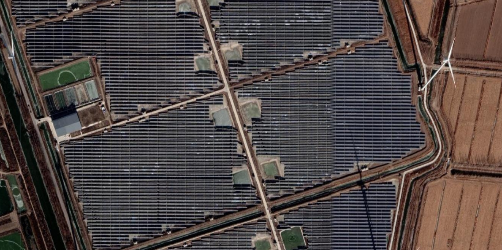

Please note: This webpage will continue to be updated. Stay tuned for future announcements.

1.Solar energy, as an environmentally sustainable power source, is gaining increasing popularity worldwide, driving a surge in the number of solar photovoltaic (PV) plants. China, which has a prominent role in this domain, requires continuous updates to its PV plant data for spatiotemporal analyses. However, there remains an absence of a comprehensive and timely dataset of PV plants across China, leaving PV installation dates and other crucial attributes for comprehensive analyses underexplored. This study leverages Sentinel-2 data as a primary source to propose an optimized deep learning approach for PV plant extraction in China. Statistical analyses of PV plant attributes, including its installation date, size, site slope, and site land cover, were implemented from multiple data sources. Comprehensive analyses were conducted to unravel their spatiotemporal development patterns in the 21st century. The results indicate that as of 2023, China boasts 4347 PV plants, collectively spanning 4146 km2, which are predominantly concentrated in Northwest and North China. 2016 and 2017 marked substantial growth in China's PV plants, while other years exhibited stability. These plants exhibit the distinct spatial characteristics of installing smaller PV plants on flat terrain covered by vegetation or barren land. Over time, a notable trend in the installation of China's PV plants has been the increasing preference for establishing larger ones in smooth terrain, with a focus on preventing damage to natural resources. The results reveal China's optimization of PV plant site selection and construction strategies, aligning with global environmental goals and sustainable energy practices.. Tips:Click the < > arrows to navigate between pages.